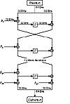
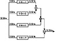

| Previous | Table of Contents | Next |
Blowfish is optimized for applications where the key does not change often, like a communications link or an automatic file encryptor. It is significantly faster than DES when implemented on 32-bit microprocessors with large data caches, such as the Pentium and the PowerPC. Blowfish is not suitable for applications, such as packet switching, with frequent key changes, or as a one-way hash function. Its large memory requirement makes it infeasible for smart card applications.
Description of Blowfish
Blowfish is a 64-bit block cipher with a variable-length key. The algorithm consists of two parts: key expansion and data encryption. Key expansion converts a key of up to 448 bits into several subkey arrays totaling 4168 bytes.
Data encryption consists of a simple function iterated 16 times. Each round consists of a key-dependent permutation, and a key- and data-dependent substitution. All operations are additions and XORs on 32-bit words. The only additional operations are four indexed array data lookups per round.
Blowfish uses a large number of subkeys. These keys must be precomputed before any data encryption or decryption.
The P-array consists of 18 32-bit subkeys:
Four 32-bit S-boxes have 256 entries each:
The exact method used to calculate these subkeys will be described later in this section.

Figure 14.2 Blowfish.
Blowfish is a Feistel network (see Section 14.10) consisting of 16 rounds. The input is a 64-bit data element, x. To encrypt:

Figure 14.3 Function F.
Function F is as follows (see Figure 14.3):
Decryption is exactly the same as encryption, except that P1, P2,..., P18 are used in the reverse order.
Implementations of Blowfish that require the fastest speeds should unroll the loop and ensure that all subkeys are stored in cache. See [568] for details.
The subkeys are calculated using the Blowfish algorithm. The exact method follows.
In total, 521 iterations are required to generate all required subkeys. Applications can store the subkeys—there’s no need to execute this derivation process multiple times.
Security of Blowfish
Serge Vaudenay examined Blowfish with known S-boxes and r rounds; a differential attack can recover the P-array with 28r + 1 chosen plaintexts [1568]. For certain weak keys that generate bad S-boxes (the odds of getting them randomly are 1 in 214), the same attack requires only 24r + 1 chosen plaintexts to recover the P-array. With unknown S-boxes this attack can detect whether a weak key is being used, but cannot determine what it is (neither the S-boxes nor the P-array). This attack only works against reduced-round variants; it is completely ineffective against 16-round Blowfish.
Of course, the discovery of weak keys is significant, even though they seem impossible to exploit. A weak key is one in which two entries for a given S-box are identical. There is no way to check for weak keys before doing the key expansion. If you are worried, you have to do the key expansion and check for identical S-box entries. I don’t think this is necessary, though.
I know of no successful cryptanalysis against Blowfish. To be safe, do not implement Blowfish with a reduced number of rounds.
Kent Marsh Ltd. has incorporated Blowfish in their FolderBolt security product for Microsoft Windows and Macintosh. It is also part of Nautilus and PGPfone.
SAFER K-64 stands for Secure And Fast Encryption Routine with a Key of 64 bits [1009]. James Massey produced this nonproprietary algorithm for Cylink Corp. and it is incorporated into some of their products. The government of Singapore is planning to use this algorithm—with a 128-bit key [1010]—for a wide variety of applications. There are no patent, copyright, or other restrictions on its use.
The algorithm has a block and key size of 64 bits. It is not a Feistel network like DES (see Section 14.10), but an iterated block cipher: The same function is applied for some number of rounds. Each round uses two 64-bit subkeys, and the algorithm only uses operations on bytes.
Description of SAFER K-64
The plaintext block is divided into eight byte-length sub-blocks: B1, B2,..., B7, B8. Then the sub-blocks go through r rounds. Finally, an output transformation is applied to the sub-blocks. Each round uses two subkeys: K2i - 1 and K2i.
Figure 14.4 shows one round of SAFER K-64. First, sub-blocks are either XORed or added with bytes of subkey K2i - 1. Then, the eight sub-blocks are subjected to one of two nonlinear transformations:
| Previous | Table of Contents | Next |
){kind=link}
){kind=link}
){kind=link}
){kind=link}